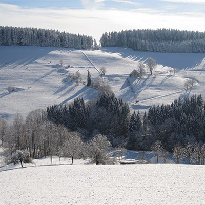
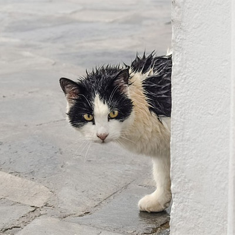

Rain drops on flower in Franklin Garden.Beautiful Sunny Day at Franklin Beach.Soft clouds float over the Tri-City area.

Light dusting of snow outside SpringfieldSunny morning near Smith Hill in Greenville.

Cat caught in rain wanders around Springfield.